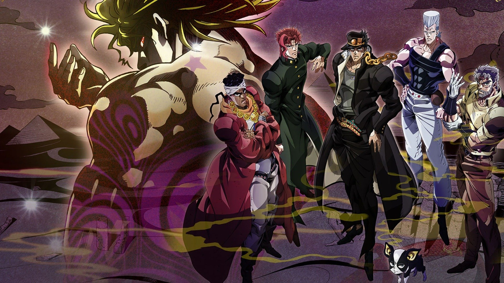
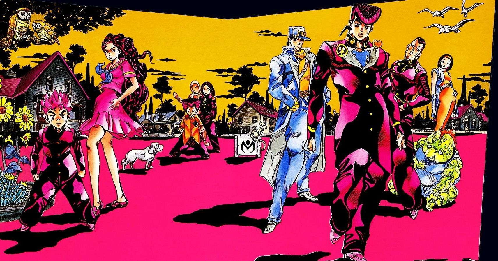
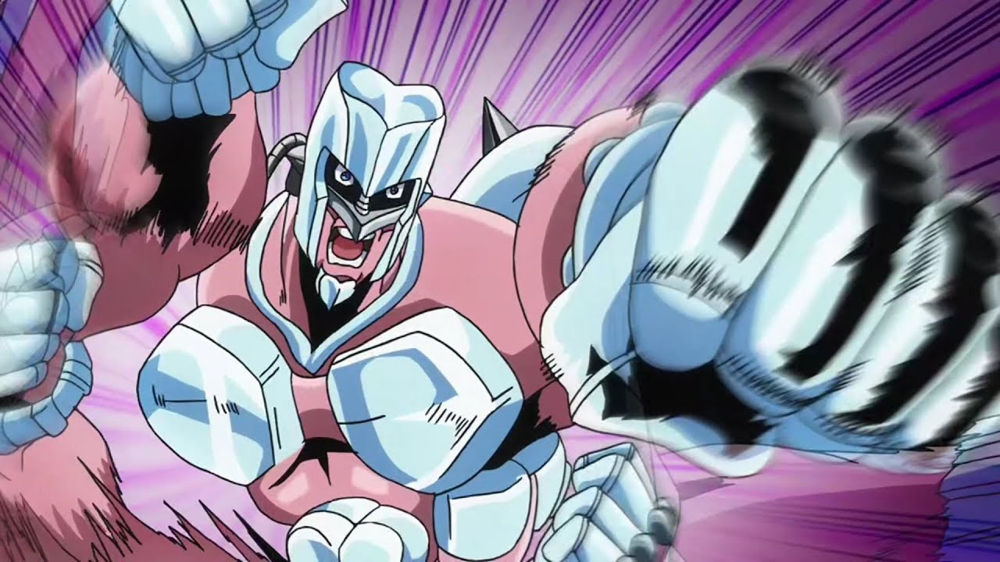
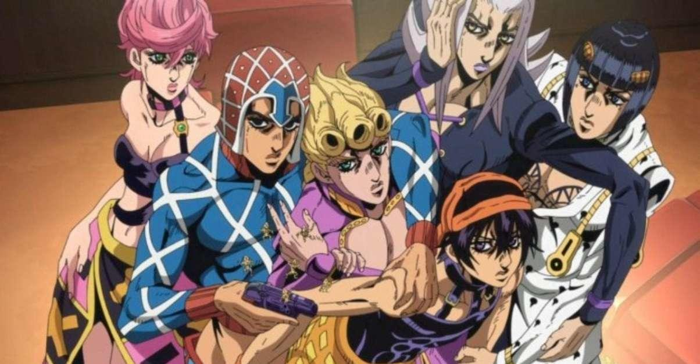
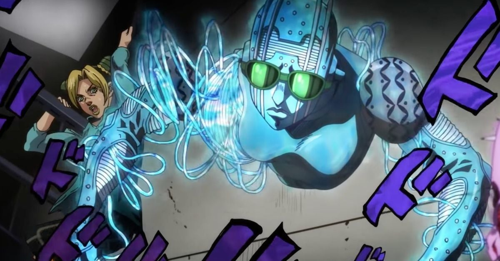

Джотаро Куджо
Главный протагонист третьей части серии Невероятные приключения ДжоДжо, Крестоносцы звёздной пыли, и третий ДжоДжо в серии. Джотаро — наполовину японец. Он хулиган, который жил обычной жизнью, пока не вернулся старый враг семьи Джостар, Дио. Видя, что его мать Холи заболевает из-за Дио, и прислушиваясь к призыву своего деда Джозефа Джостара, Джотаро отправляется в Египет, чтобы спасти свою мать и остановить вампира раз и навсегда.
Джотаро — первый ДжоДжо, обладающий стендом, невероятно мощным Star Platinum

Джоске Хигашиката
Главный протагонист четвертой части серии Невероятные приключения ДжоДжо, Несокрушимый алмаз, и четвертый ДжоДжо в серии. Он внебрачный сын Джозефа Джостара и Томоко Хигашикаты. Джоске - первокурсник средней школы, проживающий в городе Морио. Вскоре он встречает Джотаро Куджо, который сообщает ему, что он внебрачный сын Джозефа Джостара. После того, как его дедушка умер, Джоске берёт на себя задачу защитить свой любимый город от недоброжелательных пользователей стенда. Джоске обладает Crazy Diamond, мощным Стендом, способным починить почти всё. 
Джорно Джованна
Протагонист Золотого ветра и пятый ДжоДжо в серии манги Невероятные приключения ДжоДжо. Как незаконнорожденный сын Дио Брандо, зачатый украденным телом Джонатана Джостара, Джорно Джованна,
впервые представленный как Харуно Шиобана - подросток, живущий в Италии. Джорно - это пользователь
стенда с естественным происхождением, обладающий могущественным источником жизни Gold Experience в бою.

Джолин Куджо
Является протагонистом шестой части серии Невероятные приключения ДжоДжо, Каменный океан и шестой ДжоДжо в этой серии. Она дочь американки и Джотаро Куджо, протагониста Крестоносцев звёздной пыли.
Подставленная за убийство в нетрезвом видеW, Джолин отправляется в тюрьму Green Dolphin Street, где она расследует дело и сражается с самым доверенным учеником ДИО, отцом Энрико Пуччи. Во время пребывания в тюрьме, Джолин пробуждает свой стенд - Stone Free, работающего на основе струн. 